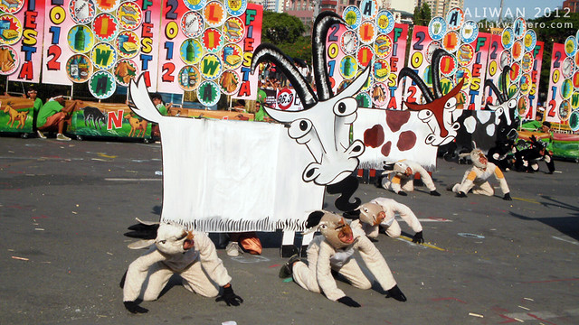

Join vibrant festival that's one of the most JOYOUS , FUN and LOUD in Batangas
KAMBINGAN FESTIVAL
Kambingan Festival is a town festivity celebrated annually on the founding anniversary of Tuy, Batangas. One of the main sources of income in TUY is “goat-raising”. In the light of this thought, the elected mayor of Tuy, Hon. Jose Jecerell Cerrado pushed the idea to have this “Kambingan Festival”. This is celebrated to showcase the different products coming from goats. People from every barangay and students of different schools in Tuy participate in this festival yearly by joining in various contests like the Street Dancing, Mini Band Competition, Goat Costumes, Cooking Competition and others. This activities give way to the significance of Kambingan Festival.
